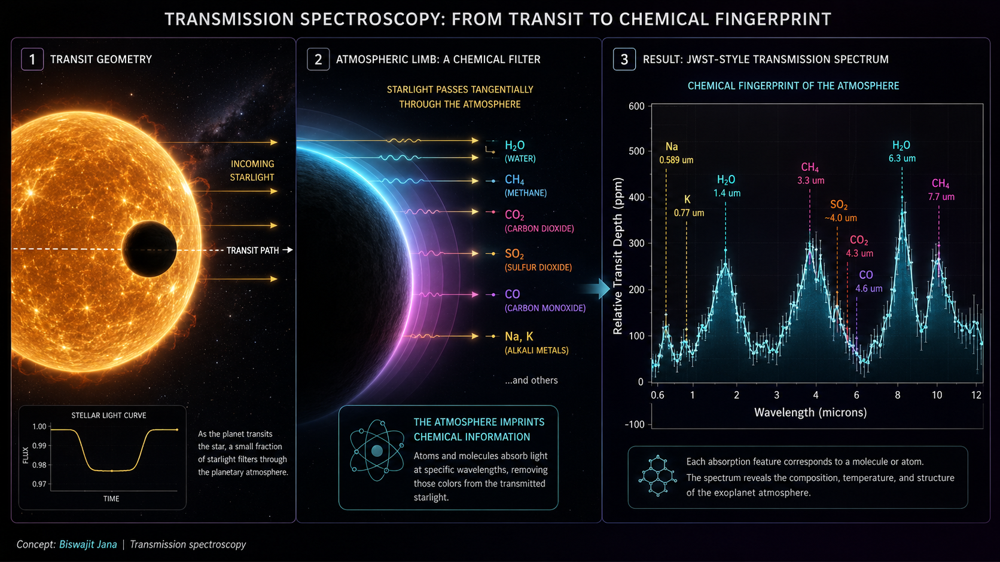

First, no, we are not literally smelling the planet.
Smell is chemistry interpreted by biology. A molecule reaches your nose, binds to receptors, and your brain turns that molecular contact into perception. Exoplanet astronomy obviously does not work like that. No carbon dioxide molecule from WASP-39 b is drifting into a telescope and politely introducing itself.
But the metaphor is useful because the scientific act is similar in spirit: identify chemical species from the signatures they leave. A nose uses receptors. A spectrograph uses wavelength. Molecules do not need to arrive at Earth; their absorption fingerprints can travel inside the starlight.
A transit turns a star into a backlight.
The ordinary transit method measures the total dip in brightness when a planet crosses the stellar disk. Transmission spectroscopy adds one question: does the dip have exactly the same depth at every wavelength?
If the planet had no atmosphere and the star were perfectly simple, the depth would mainly be the area ratio between planet and star. With an atmosphere, some starlight skims through the limb of the planet before reaching us. At wavelengths where atmospheric gases absorb strongly, that limb becomes more opaque, so the effective planet radius increases slightly.
Here \(R_p(\lambda)\) is not the solid surface radius. It is the effective radius of the planet plus the part of the atmosphere that blocks light at wavelength \(\lambda\).
A transmission spectrum is a graph of missing light.
In many diagrams, the vertical axis is the amount of light blocked and the horizontal axis is wavelength. A flat line would mean the apparent planet size is nearly the same across the observed range. Peaks mean more light is blocked at those wavelengths, often because a molecule absorbs there.
This is slightly counterintuitive at first. In a normal stellar absorption spectrum, absorption appears as dips in flux. In a transmission spectrum plotted as transit depth, absorption often appears as a peak because the planet looks bigger at that wavelength. Same physics, different bookkeeping.
The atmospheric scale height \(H\) grows with temperature and shrinks with stronger gravity or heavier mean molecular weight \(\mu\). Here \(\mu\) is in proton-mass units and \(m_H\) is the hydrogen mass. Puffy hot atmospheres produce larger transmission features than compact heavy atmospheres.

How loud is an atmosphere in ppm?
The most useful intuition is that transmission spectroscopy measures an annulus, not a disk. The opaque planet blocks an area roughly \(\pi R_p^2\). The atmosphere adds a thin wavelength-dependent ring. If a strong molecular band samples \(N_H\) scale heights, the extra transit depth is approximately:
This is not a retrieval model. It is a scaling law. It explains why hot Jupiters around small stars are generous, and Earth-like atmospheres around Sun-like stars are brutal.
The effective radius comes from integrating over atmospheric chords. The optical depth \(\tau_\lambda\) depends on abundance, pressure, temperature, clouds, and molecular cross-sections.
Molecules are picky about wavelength, which is convenient for us.
Molecules absorb light when photons match allowed transitions in their rotational and vibrational energy structure. The result is not a single neat barcode line, but a pattern of bands. Water vapor has strong near-infrared bands. Carbon dioxide has a prominent feature around 4.3 microns. Methane absorbs in several infrared bands. Sodium and potassium can leave visible and near-infrared atomic signatures.
The exact spectrum depends on temperature, pressure, abundance, clouds, haze, stellar contamination, and instrument response. That is why the job is not simply spotting a bump and shouting a molecule's name. Atmospheric retrieval is model comparison under uncertainty.
Clouds can erase the confession.
An atmosphere may contain the molecules we are looking for and still refuse to show them clearly. Clouds and hazes can mute spectral features by blocking the deeper atmospheric layers where stronger absorption would otherwise be visible. In a transmission spectrum, this can flatten the line into something frustratingly quiet.
This is not failure. A flat spectrum is also information. It may indicate a high-altitude cloud deck, haze scattering, a compact high-metallicity atmosphere, low scale height, or simply data that are not precise enough. The universe has many ways to say "try again, but with better error bars."
The signal is tiny, which is where instrumentation enters the room.
Transmission features are often measured in parts per million or small fractions of a percent. The star is bright. The atmospheric annulus is thin. The instrument is imperfect. The star may have spots, faculae, limb darkening, and time-variable behavior. The detector may have ramps, drifts, persistence, flat-field issues, and wavelength calibration quirks.
This is why transmission spectroscopy is not only an astrophysics problem. It is also an instrumentation problem, a detector problem, a calibration problem, and a statistics problem. The planet's atmosphere is not just hidden behind distance. It is hidden behind every small imperfection in the measurement chain.
More repeated transits can improve precision when noise behaves nicely. Real systematics are less generous, because they do not always average down like independent random noise.
Higher \(R\) separates narrower features, but often with fewer photons per bin. In practice, observers trade spectral resolution against signal-to-noise and the width of the molecular band they want to test.
JWST turned this from promising to spectacularly useful.
The James Webb Space Telescope has made transmission spectroscopy feel less like a distant ambition and more like a working atmospheric laboratory. WASP-39 b is a famous example because Webb observations revealed a rich transmission spectrum with species such as water, carbon dioxide, carbon monoxide, sulfur dioxide, sodium, and potassium discussed in NASA's public release material.
The same idea appears across other targets. WASP-96 b showed water vapor signatures with evidence that clouds and possible haze affected the shape. WASP-107 b combined Hubble and Webb measurements across a broad wavelength range, showing how multiple instruments can build a wider atmospheric picture. WASP-17 b even brought mineral cloud chemistry into the conversation through mid-infrared spectroscopy.
A spectrum is not the atmosphere. It is a puzzle with priors.
Atmospheric retrieval means proposing many possible atmospheres, generating spectra from them, comparing those spectra with the data, and asking which parameter combinations survive. The output is usually not a single atmosphere but a probability distribution over temperature, radius reference pressure, abundances, cloud properties, and sometimes chemistry assumptions.
This is where degeneracy enters. A weaker water band could mean less water. It could also mean higher clouds, higher mean molecular weight, lower temperature, smaller scale height, or uncorrected stellar contamination. Retrieval is the art of being honest about those overlapping explanations.
The star can forge atmospheric features.
Transmission spectroscopy assumes we know the stellar light source. Real stellar disks have spots, faculae, granulation, limb darkening, and wavelength-dependent surface structure. If the planet crosses one stellar region while the out-of-transit disk contains a different mixture of surface temperatures, the inferred transmission spectrum can be biased.
This is especially important for small planets around active cool stars. A planet may appear to have a spectral slope or molecular-looking feature because the star is heterogeneous. Rackham, Apai, and Giampapa call this the transit light source effect, and it is one reason biosignature claims will need extreme caution.
The measured depth can include the planet plus wavelength-dependent stellar surface effects. The inequality is the whole headache.
This is also why biosignatures are hard.
Once we can read atmospheric chemistry, the tempting next question is life. Could oxygen, methane, carbon dioxide, water vapor, ozone, or other combinations reveal biology? Maybe, but the word "maybe" is doing real work. A molecule is not automatically a biosignature just because biology can produce it.
Context matters. Stellar type, planetary temperature, surface pressure, atmospheric escape, photochemistry, volcanic activity, ocean chemistry, clouds, and false-positive pathways all matter. A convincing biosignature will likely require a pattern of gases in environmental context, not a single heroic molecule carrying the whole claim on its back.
This is where exoplanets meet the lab bench.
The reason I like this topic is that it sits exactly between astrophysics and instrumentation. The scientific question is cosmic: what are distant worlds made of? The practical question is brutally local: how stable is the spectrograph, how well do we calibrate the detector, how repeatable is the optical path, how much systematic noise is being smuggled into the result?
That is the bridge from transmission spectroscopy to precision spectrographs, feedback control, detector stability, and environmental monitoring. An atmospheric feature in an exoplanet spectrum is only as convincing as the chain of optics, electronics, software, calibration, and statistical modelling that survived between star and conclusion.
The planet never visits us. Its filtered starlight does.
Transmission spectroscopy is one of the most elegant tricks in modern astronomy. It turns a transit into chemistry, a spectrum into an atmosphere, and a distant unresolved planet into a physical world with gases, clouds, temperature structure, and history.
It is not easy. The signal is tiny, the models are conditional, the instruments must behave, and clouds enjoy ruining simple explanations. But when it works, the result is astonishing: a planet hundreds of light-years away leaves enough of itself in starlight for us to begin reading its air.
References and source notes
- Seager, S. and Sasselov, D. D. (2000). Theoretical transmission spectra during extrasolar giant planet transits.
- Brown, T. M. (2001). Transmission spectra as diagnostics of extrasolar giant planet atmospheres.
- Charbonneau, D. et al. (2002). Detection of an extrasolar planet atmosphere through sodium absorption.
- Lecavelier des Etangs, A. et al. (2008). Rayleigh scattering in the transit spectrum of HD 189733 b.
- Sing, D. K. et al. (2016). A continuum from clear to cloudy hot-Jupiter exoplanets without primordial water depletion.
- Madhusudhan, N. (2019). Exoplanetary atmospheres: key insights, challenges, and prospects.
- Rackham, B. V., Apai, D. and Giampapa, M. S. (2018). The transit light source effect.
- Kempton, E. M.-R. et al. (2018). A framework for prioritizing the TESS planetary candidates most amenable to atmospheric characterization.
- NASA Science. Exoplanet WASP-39 b transmission spectra.
- ESA/Webb. Hot Gas Giant Exoplanet WASP-39 b NIRSpec transmission spectrum.
- NASA Science. Webb detects carbon dioxide in an exoplanet atmosphere.
- NASA Science. Exoplanet WASP-96 b NIRISS transmission spectrum.
- NASA Science. WASP-107 b Hubble, NIRCam, and MIRI transmission spectrum.
- NASA Science. WASP-17 b MIRI transmission spectrum.
- JWST Transiting Exoplanet Community Early Release Science Program papers on WASP-39 b, including NIRISS, NIRSpec, NIRCam, and photochemical SO2 analyses.
Comments and reactions
Comments are powered by GitHub Discussions through giscus. Leave a question, correction, or reaction below.